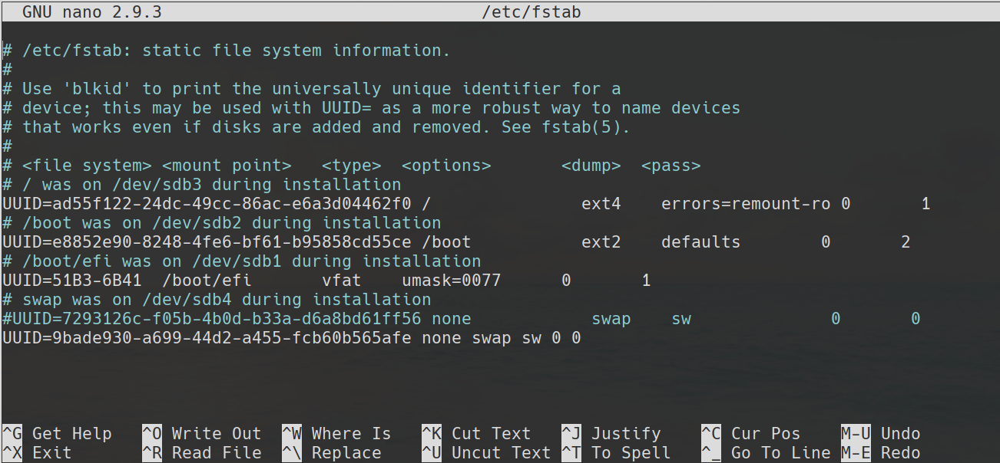

انتخاب یک سیستم عامل
واقعیت این است که شما برای یادگیری سیستم عامل لینوکس در حال خواندن این کتاب هستید. برای شروع، باید بفهمید که سیستم عامل چیست و لینوکس چه گونه سیستم عاملی است. این فصل به مسائل و مشکلات مبانی میپردازد.
در این فصل، توضیح می دهیم که یک سیستم عامل چیست ، چگونه کاربران با یک سیستم عامل ارتباط برقرار میکنند ، سیستم عامل لینوکس با سایر سیستم عامل هایی که ممکن است شما با آنها آشنا باشید مقایسه ميشود و تفاوت بین پیاده سازی های لینوکس را روشن میکنیم. درک این مسائل به شما کمک می کند تا با یادگیری لینوکس و جابجایی بین سیستم های مبتنی بر لینوکس و سایر سیستم ها ، راه خود را پیدا کنید.
-
سیستم عامل چیست؟
-
بررسی رابط کاربری
-
لینوکس در چه قسمتی از دنیای سیستم عامل جا دارد؟
-
توزیع چیست؟
-
جزئیات بیشتر
سیستم عامل چیست؟
سیستم عامل اساسی ترین ویژگی های رایانه را ، حداقل از دید نرم افزاری، ارائه میدهد. سیستم عامل به شما اجازه میدهد تا از سخت افزار رایانه استفاده کنید، استاندارد های رابط کاربری را مشخص میکند، و ابزار های مفیدی که رایانه را قابل استفاده میکنند، ارائه میدهد. در نهایت، همه این ویژگی ها به هسته سیستم عامل منتهی میشوند که در ادامه توضیحات بیشتری در این رابطه داده میشود. سایر ویژگی های سیستم عامل نیز به برنامه های بالاتر از سطح هسته وابسته اند که بعد ها در همین فصل توضیح داده میشوند.
هسته چیست؟
هسته سیستم عامل یک مؤلفه نرم افزاری است که وظیفه مدیریت انواع مختلف ویژگی های سطح پایین رایانه را دارد، از جمله:
- رابط سخت افزار(آداپتور شبکه، هارد دیسک،و..)
- تخصیص حافظه موقت به برنامه های در حال اجرا
- اختصاص زمان پردازش برنامه برای واحد پردازنده مرکزی
- مقدر نمودن ارتباط برنامه ها با یکدیگر
وقتی شما در حال استفاده از یک برنامه هستید(مثلا یک مرورگر وب)، بسیاری از عملکرد های اساسی آن به هسته متکی است. مرورگر وب به شرطی میتواند با دنیای خارج ارتباط برقرار کند که توانایی استفاده از عملکرد های شبکه که توسط هسته ارائه میشوند را داشته باشد. هسته برای مرورگر وب مقداری از حافظه را تخصیص میدهد و همچنین پردازش های این ابزار را برای واحد پردازنده مرکزی زمان بندی میکند که بدون این عملکرد ها ابزار توانایی اجرا شدن را نخواهد داشت. مرورگر وب برای نمایش محتوای چندرسانه ای نیاز به افزونه هایی داشته باشد که آنها نیز توسط سرویس های هسته فراهم میشوند.
اعمال مشابهی در مورد هر برنامه ای که در رایانه اجرا می کنید اجرا میشود، اگرچه جزئیات در سیستم عامل ها و برنامه ها متفاوت است.
در مجموع، هسته، نرم افزاری است که مانند "چسب" اجزاء رایانه را در کنار یکدیگر نگه میدارد. بدون هسته، یک سیستم عامل مدرن تقریبا توانایی انجام هیچ کاری را ندارد.
هسته ها قابل تعویض نیستند(نمیتوان هسته یک سیستم عامل را درون دیگری قرار داد)، هسته لینوکس از هسته مک و یا ویندوز متفاوت است. هر کدام از این هسته ها دارای طراحی داخلی خاص و روابط نرم افزاری مختص خود هستند. بدین ترتیب هر سیستم عامل برپایه هسته ای ساخته شده است و مجموعه نرم افزاری خود برای ارائه ویژگی های مختص خودش استفاده میکند.
لینوکس از هسته ای به نام Linux استفاده میکند(در واقع نام سیستم عامل گنو/لینوکس است که شامل نرم افزار های پروژه گنو و هسته لینوکس میباشد اما به اختصار به آن "لینوکس" نیز میگویند). برنامه هایی که متکی به هسته نیستند ویژگی های دیگری را ارئه میدهند که امکان ارتباط با لینوکس را دارند و بیشتر آنها در سیستم عامل های دیگر نیز موجود هستند، همانگونه که در قسمت بعدی "چه چیز دیگری یک سیستم عامل را میسازد؟" بررسی خواهیم کرد.
دانش آموزی به نام Linus Torvalds شروع به ساختن هسته لینوکس در سال 1991 کرد. لینوکس در آن زمان به صورت قابل توجهی گسترش یافت. امروزه روی طیف گسترده ای از CPU ها و سخت افزار ها نیز قابل اجراست. ساده ترین راه یادگیری لینوکس استفاده از آن به عنوان سیستم عامل اصلی روزانه است و پیکربندی آن برای این امر در این کتاب مورد بررسی قرار میگیرد. هسته لینوکس، با این حال، روی هر چیزی از تلفن های همراه تا ابر کامپیوتر های قدرتمند قابل اجراست.
خیلی از برنامه ها روی چندین هسته قابلیت اجرا را دارند، اما نیاز به یک سری تغییرات و تطابق بخشی ها از سمت برنامه نویس برای ویژگی های خاص سیستم عامل دارند. برنامه نویس ها برای سیستم عامل های مختلف فایل های باینری مختلفی میسازند(فایل های باینری فایل هایی هستند که برای هسته ها و پردازنده های مختلف به صورت جداگانه ساخته میشوند).
چه چیز دیگری یک سیستم عامل را میسازد؟
هسته، بخش مرکزی هر سیستم عاملی است که کاربران به صورت مستقیم نمیتوانند ارتباطی با آن داشته باشند، به جای آن اکثر کاربران با تعداد زیادی اجزاء نرم افزاری ارتباط برقرار میکنند که این عمل به ویژگی های خاص سیستم عامل ها بستگی دارد! این گونه ابزار ها شامل موارد زیر میشوند:
پوسته های خط فرمان : سالها پیش، کاربران منحصراً از طریق نوشتن دستورات درون یک برنامه (که به آن shell یا پوسته میگوییم) با رایانه ارتباط برقرار میکردند. دستورات توانایی تغییر نام فایل ها، اجرای ابزار ها، و... را داشتند. اگر چه بسیاری از رایانه ها امروزه از روابط متنی پوسته استفاده نمیکنند، اما هنوز هم در سطح متوسط و حرفه ای کاربران لینوکس دارای کاربرد های فراوانی میباشند، و آنها را در بخش ششم مورد بررسی قرار خواهیم داد. بسیاری از پوسته ها با قابلیت های مختلف برای سیستم عامل های مختلف وجود دارند. در سیستم عامل لینوکس پوسته ای به نام Bourne Again Shell یا Bash بسیار مشهور است(و در اکثر توزیع ها به صورت پیشفرض از این پوسته استفاده میشود).
رابط گرافیکی کاربر : رابط گرافیکی کاربر (GUI) حداقل از منظر یک کاربر تازه کار، بهبودی برای پوسته متنی است. به جای نوشتن دستورات، محیط گرافیکی به آیکن ها، منو ها، و اشاره گر موس وابسته است. سیستم عامل های ویندوز و مک محیط گرافیکی خاص خودشان را دارند. اما لینوکس متکی بر یک محیط گرافیکی به نام X Window System است که به اختصار به آن X یا Xorg نیز گویند، البته در سال های اخیر یک پروتکل گرافیکی بسیار بهتر در دست توسعه قرار گرفته که Wayland نام دارد و متفاوت تر از X میباشد، که در سطح های بعدی به آنها خواهیم پرداخت. X یک محیط گرافیکی پایهای است، به سبب آن، لینوکس از محیط های میزکار(Desktop Environments) همانند GNOME و یا K Desktop Environment(KDE) / Plasma استفاده میکند تا برای کاربر محیط کامل تری برای استفاده بسازد. تفاوت های زیادی بین میزکار های لینوکس و محیط های گرافیکی ویندوز و یا مک وجود دارد که ممکن است در ابتدای استفاده شما را شوکه کنند!
برنامه های کاربردی : سیستم عامل های مدرن همواره با تنوع نرم افزار های کاربردی/سودمند، مانند ماشین حساب، تقویم، ویرایشگر متن، ابزار های تعمیر و نگهداری دیسک، و... ارائه میشوند. این برنامه ها در سیستم عامل های مختلف، متفاوت اند. در واقع حتی نام و شیوه اجرای این ابزار ها نیز در سیستم عامل های مختلف، متفاوت اند. خوشبختانه، به صورت معمول میتوانید با خواندن فهرست برنامه در میزکار ها این ابزار ها را پیدا کنید.
کتابخانه های نرم افزاری : اگر برنامه نویس نیستید، نیاز به کارکردن مستقیم با کتابخانه ها را نخواهید داشت؛ با این وجود ما آنها را وارد لیست آموزشی کرده ایم چرا که سرویس های حیاطی نرم افزار ها را فراهم میآورند. بعنوان مثال در لینوکس بسیاری از برنامه ها به کتابخانه libc وابسته اند. سایر کتابخانه ها ویژگی های مرتبط با گرافیک کمک میکنند تا ابزار ها توانایی تجزیه دستورات برای خط فرمان را داشته باشند. بسیاری از کتابخانه های موجود در لینوکس به پربار کردن زمینه نرم افزاری لینوکس کمک میکنند.
برنامه های بهره وری : نرم افزار های معمول که برای استفاده از رایانه مورد استفاده قرار میگیرند، مانند مرورگر وب، پردازنده متن، ویرایشگر های گرافیکی و.... اگرچه چنین برنامه هایی معمولاً جدا از سیستم عامل هستند، ولی گاهاً برای سیستم عامل خاصی تولید میشوند. حتی زمانی که یک برنامه برای سیستم عامل های مختلف در دسترس است، ممکن است احساسات متفاوتی از تجربه را روی سیستم عامل های مختلف و محیط گرافیکی های مختلفی که ویژگی های خاصی برای ابزار فراهم میآورند را به کاربر منتقل کند.
بررسی رابط کاربری
قبل تر، در رابطه با تفاوت حالت متنی و گرافیکی رابط کاربری اشاره شد. اگرچه بسیاری از کاربران نهایی علاقه بیشتری به محیط کاربری گرافیکی به خاطر راحتی در استفاده دارند، لینوکس سنت قدرتمند رابط متنی را حفظ میکند. فصل ششم محیط متنی لینوکس را با جزئیات بیشتری مورد بررسی قرار میدهد و در فصل چهارم "استفاده از ابزار های رایج لینوکس" اصول پایه ای عملیات های محیط گرافیکی لینوکس مورد بررسی قرار میگیرد. مهم است که شما زمینه پایه ای اصول هر دو محیط گرافیکی و متنی را فراگیرید.
استفاده از حالت متنی رابط کاربری
در گذشته، و یا حتی امروزه، رایانه های لینوکس در حالت متنی راه اندازی میشدند. زمانی که سیستم به صورت کامل راه اندازی شد، خروجی نمایشگر متنی ساده برای اعلان ورود به سیستم نمایش میدهد که تقریبا مانند متن زیر است :
Fedora release 31 (Thirty One)
Kernel 5.5.fc21.x86_64 on an x86_64 (tty1)
essentials login:
جزئیات چنین اعلان ورودی در سیستم های مختلف، متفاوت است. این مثال شامل تکه هایی از اطلاعات زیر است :
-
نام سیستم عامل و نسخه آن : Fedora Linux 31
-
نام رایانه : essentials
-
نام دستگاه سخت افزاری مورد استفاده برای ورود : tty1
-
اعلان ورود : :login
برای ورود به چنین سیستمی، میبایست نام کاربری خودتان را پس از login وارد کنید. بعد از این عمل سیستم از شما رمز عبور رو خواهد خواست که آن را هم میبایست تایپ کنید. اگر شما نام کاربری و رمز عبور را به درستی وارد کرده باشید ، اعلان پوسته مانند زیر به شما نمایش داده خواهد شد :
[rich@essentials:∼]$در این کتاب، اکثر اعلان پوسته برای نوشتن دستورات از قلم انداخته میشود اگر چه فقط علامت دلار ($) به عنوان اعلان ورودی دستورات معمولی کاربر مد نظر قرار میگیرد. برخی از دستورات میبایست با دسترسی کاربر ریشه (root) وارد شوند که مدیریت سیستم عامل را بر عهده دارد، در این شرایط اعلان ورودی دستورات به علامت هشتگ (#) تغییر مییابد(در اکثر توزیع های برپایه لینوکس این استاندارد رعایت میشود!)، جزئیات اعلان پوسته درون توزیع های مختلف، متفاوت است اما در هر صورت شما میتوانید دستورات خود را پس از اعلان پوسته وارد نمایید. بعنوان مثال میتوانید دستور ls (که مخفف list است) را برای گرفتن لیست فایل ها درون دایرکتوری در حال استفاده را وارد کنید.
حذف حروف صدا دار، و گاهاً صامت، نام دستورات ابتدایی را کوتاه تر میکند تا زمان لازم برای نوشتن یک دستور و اجرای آن به حداقل برسد. اشکال این عمل اینست که برخی اوقات باعث مبهم شدن عملکرد دستور میشود ولی به علت کثرت ابزار ها چاره ای نیست.
برای نمونه، دستور ls لیستی از فایل ها را نمایش میدهد:
$ ls
106792c01.doc f0101.tif
این مثال دو فایل را در مسیر جاری نمایش میدهد که یکی از آن ها 106792c01.doc و دیگری f0101.tif میباشد. میتوانید دستورات دیگر، مانند cp برای کپی کردن، rm برای حذف نمودن و یا mv برای جابهجا کردن این فایل ها را استفاده کنید. در فصل ششم و هفتم "مدیریت فایل" چنین عملیات هایی روی فایل ها به صورت مفصل توضیح داده میشوند. برخی از برنامه های متنی، نمایشگر را برای ارائه به روز رسانی مداوم و یا امکان تعامل به روشی انعطاف پذیر با داده ها تحت کنترل میگیرند. تصویر ۱.۱، برای نمونه ویرایشگر متن nano را نمایش میدهد که با جزئیات در فصل دهم "ویرایش فایل ها" آن را مورد بررسی قرار میدهیم، هنگامی که nano در حال اجراست میتوانید از کلید های جابهجایی صفحه کلید برای جابهجا نمودن نشانهگر استفاده کنید و با نوشتن متن فایل را تغییر دهید و...

تصویر ۱.۱ برخی از ابزار های متنی تمام نمایشگر را در اختیار میگیرند.
حتی اگر به صورت گرافیکی وارد سیستم شده اید، میتوانید از محیط متنی پوسته درون پنجرهای(ابزاری) به نام Terminal استفاده کنید. محیط های گرافیکی معمول لینوکس قابلیت اجرای برنامه terminal را دارند که پوسته را درون خود شبیه سازی(اجرا) میکنند و میتوانید به کمک آن ابزار های متنی را اجرا کنید.
استفاده از یک رابط کاربری گرافیکی
تعداد زیادی از کاربران با محیط های گرافیکی نسبت به محیط دستور و متنی راحت ترند. بدین ترتیب بسیاری از سیستم های مدرن لینوکس به صورت پیشفرض با حالت گرافیکی راه اندازی میشوند و یک صفحه ورود گرافیکی مانند شکل ۱.۲ را ارئه میدهند که میتوانید در آن نام کاربری خود را از یک لیست انتخاب کنید و یا آن را وارد نمایید و پس از وارد کردن پسورد وارد سیستم شوید :

تصویر ۱.۲ صفحات ورود گرافیکی در لینوکس همانند صفحات ورود ویندوز و یا مک هستند.
برخلاف ویندوز و مک، لینوکس دنیایی از میزکار (de) ها را در اختیار شما قرار میدهد که میتوانید متناسب با توزیع مدنظر خود و قابلیت های نرم افزاری میزکار و میزان مصرف منابع و علائق خود یکی(یا حتی چندین عدد) از آنها را انتخاب و استفاده کنید. میزکار های لینوکس شامل:
بسیاری از میزکار ها دارای تکنولوژی های کمکی هستند که به صورت داخلی(فقط برای همان میزکار) ارائه میشوند. در شکل ۱.۲ نماد شخص در بالا و سمت راست نمایشگر به شما اجازه انتخاب تکنولوژی های کمکی ارائه شده مانند screen reader , onscreen keyboard ,... را میدهند تا به شما برای ورود به سیستم کمک کند. میزکار های لینوکس میتوانند کاملا متفاوت از یکدیگر باشند اما همگی یک عمل را انجام میدهند. شکل ۱.۳ نمایی از میزکار KDE که به صورت پیشفرض در توزیع openSUSE ارائه شده به همراه چند نرم افزار در حال اجرا نمایش میدهد. در فصل چهارم محیط های میزکار معمول و ویژگی های آنها با جزئیات مورد بررسی قرار میگیرند، اما در حال حاضر دانستن این که همه آنها ویژگی هایی مانند زیر را به ارمغان میآورند کافیست:

تصویر ۱.۳ محیط های میزکار لینوکس کنترل های گرافیکی مختلفی را ایجاد میکنند که انتظار اکثر کاربران است.
اجرا کننده های نرم افزار شما میتوانید با انتخاب ابزار از منو ابزار آنها را اجرا کنید. معمولاً، یک یا چند منو در بالا، پایین یا اطراف صفحه نمایش وجود دارند. در شکل ۱.۳ با کلیک کردن روی نماد openSUSE در گوشه سمت چپ-پایین صفحه نمایش، منو ابزار ها نمایش داده خواهد شد.
مدیریت فایل ها لینوکس مدیر فایل های گرافیکی را که مشابه ویندوز و یا مک هستند را فراهم میکند. مانند پنجره ای که در وسط صفحه شکل ۱.۳ نمایش داده شده است.(مدیر فایل گرافیکی Dolphin)
کنترل پنجره ها شما میتوانید پنجره های مختلف را با کلیک کردن و کشیدن نوار عنوان آنها را جابهجا کنید و با کلیک کردن و گرفتن حاشیه پنجره، اندازه آن را تغییر دهید و کار هایی از این قبیل را انجام دهید.
چندین میزکار اکثر میزکار های لینوکس شما را قادر میسازند تا چندین میزکار مجازی را فعال کنید تا در هر کدام از آنها برنامه های دلخواهتان را اجرا کنید. این ویژگی برای خلوت نگه داشتن صفحه هنگام اجرای ابزار های متفاوت کار آمد است. به صورت معمول یک نماد برای جابهجایی میان این میزکار های مجازی فراهم شده است.
گزینه های خروج از سیستم شما میتوانید از نشست(session) لینوکس خود خارج شوید، که به شما اجازه میدهد رایانه را خاموش کنید و یا با کاربر دیگری وارد سیستم شوید.
همینطور که درباره لینوکس اطلاعات بیشتری کسب میکنید، کشف میکنید که محیط های گرافیکی آن کاملاً انعطاف پذیر هستند. اگر محیط گرافیکی پیش فرض توزیع لینوکسی خود را نمیپسندید، میتوانید آن را تغییر دهید. اگرچه تمامی آنها قابلیت های مشابهی را ارائه میدهند، برخی افراد نسبت به میزکار ها اولویت های محکمی دارند. در واقع لینوکس انتخاب هایی را در اختیار شما قرار میدهد که در ویندوز و یا مک این آزادی انتخاب را نخواهید داشت، پس برای امتحان چندین میزکار مختلف احساس آزادی داشته باشید.
لینوکس در چه قسمتی از دنیای سیستم عامل جا دارد؟
عنوان این بخش حاکی از مقایسه است، و از آنجا که این کتاب درمورد لینوکس است، مقایسه میبایست با سیستم های غیر لینوکس انجام گیرد. بنابر این لینوکس را با سه سیستم عامل دیگر از خانواده سیستم عامل ها مقایسه میکنیم: یونیکس، مک و مایکروسافت ویندوز.
مقایسه لینوکس با یونیکس
اگر شما قصد ترسیم"درخت خانوادگی" سیستم عامل ها را داشته باشید، نهایتاً کارتان به کندن موهایتان خواهد کشید. این مسئله به خاطر این هست که طراحان سیستم عامل گاهی اوقات قابلیت های سیستم عامل های دیگر را تقلید میکنند و حتی برخی مواقع ایده های دیگران را ترکیب میکنند تا سیستم عامل خودشان را راه اندازی کنند. نتیجه این عمل دنیایی از پیچیدگی ها در شباهت سیستم عامل ها به یکدیگر است که علت عمده آن "قرض گرفتن" کد میباشد. تلاش برای ساخت نقشه از این همه تاثیر گذاری ها میتواند بسیار سخت باشد. در مورد لینوکس و یونیکس، هرچند، یک قضیه کاملاً مشخص است :
لینوکس پس از یونیکس مدل سازی شد.
یونیکس در سال ۱۹۶۹ در آزمایشگاه AT&T شرکت Bell ساخته شد. تاریخچه یونیکس پیچیده است و شامل چندین انشعاب(که در آن کد به دو یا چند پروژه مستقل تقسیم میشود) و حتی کدی که تقسیم شده دوباره به صورت کاملی بازنویسی میشود. سیستم های لینوکس مدرن قسمت بزرگی از محصولات متن بازی هستند که از برنامه های یونیکس شبیه سازی شده اند، و یا حتی به صورت عمومی تر اصل کد متن باز پروژه های یونیکس هستند. این پروژه ها شامل موارد زیر میشوند :
هسته لینوکس لینوس تروالدز هسته لینوکس را به عنوان پروژه ای برای سرگرمی در سال ۱۹۹۱ ساخت، اما خیلی زود مهم تر از چیزی شد که فقط برای سرگرمی بتوان به آن مراجعه کرد. هسته لینوکس برای سازگاری با سایر کرنل های یونیکس طراحی شده بود، در واقع این پروژه از روابط نرم افزاری مشابه استفاده کرده بود. این عمل استفاده از نرم افزار های متن باز را در سایر نسخه های یونیکس که در آنها هسته لینوکس به کار رفته را آسان تر کرده است.
پروژه گنو پروژه گنو یونیکس نیست(GNU: Gnu's Not Unix) حاصل تلاشی از بنیاد نرم افزار آزاد (FSF) برای توسعه جایگزین های متن باز برای همه ی اجزاء سیستم عامل یونیکس است. در سال ۱۹۹۱ بنیاد نرم افزار آزاد تقریبا تمام نرم افزار ها بعلاوه یک هسته برجسته که مورد نیاز یک سیستم عامل بودند را منتشر کرد.(هسته GNU HURD در حال حاضر در دسترس است ام به اندازه لینوکس مشهور نیست.)
جایگزین ابزار های گنو، ابزار های تجاری ، انحصاری و متن باز توسعه داده شده برای نسخه های یونیکس Berkeley Software Distribution یا BSD هستند. ممکن است ابزارهای استفاده شده در یک سیستم عامل شبه یونیکس بر لذت استفاده از آن اثر بگذارند اما احساس استفاده از کل این مجموعه های ابزاری به اندازه کافی مشابه با استفاده از نسخه های یونیکس در هنگام مقایسه با یک سیستم عامل غیر یونیکسی میباشد.
پروتکل گرافیکی Xorg-X11 سیستم پنجره ای X برای اکثر سیستم عامل های یونیکس یک محیط گرافیکی است. بسیاری از توزیع های لینوکس امروزه از انواع Xorg-X11 بعنوان X استفاده میکنند. مانند سایر ابزار های اصلی حالت متنی که توسط پروژه گنو ارائه شده است، انتخاب سرور X میتواند بر برخی از قابلیت های سیستم عامل شبه یونیکس مانند انواع مختلف فونت های پشتیبانی شده تاثیر گذارد.
محیط های میزکار(DE) میزکار های Gnome, Plasma, Xfce, Cinnamon, Deepin, ... تعدادی از محیط های میزکار معروف متن باز هستند که به صورت گسترده ای جای میزکار های تجاری و حتی نسخه های تجاری یونیکس را نیز گرفته اند. بدین ترتیب نمیتوان تفاوت های بزرگی در این زمینه در مقایسه با یونیکس یافت.
برنامه های سرور با توجه به گذشته، یونیکس و لینوکس به عنوان سیستم عامل های سمت سرور مشهور بودند(/هستند)-- سازمان های مختلف از این سیستم عامل ها برای اجرای وب سرور ها، سرور های ایمیل، سرور های فایل، و... استفاده میکنند. لینوکس همان برنامه های مشهور سمت سروری را که یونیکس تجاری و BSD متن باز استفاده و قابل ارائه میکنند را نیز اجرا میکند.
نرم افزار های بهره وری کاربر در این قلمرو، همانند برنامه های سمت سرور، لینوکس ابزار های مشابهی را همانند سیستم عامل های غیر یونیکس ارائه میدهد. در مورد های خیلی کمی لینوکس برنامه های بیشتری را ارئه میدهد و یا حتی آنها را بهتر اجرا میکند که این دلیل بیشتر بخاطر شهرت لینوکس و گستره درایور های سخت افزاری که لینوکس ارائه میدهد میباشد. برای نمونه، اگر برنامه ای به پشتیبانی حرفه ای کارت گرافیک نیاز داشته باشد، شانس پشتیبانی شدن توسط لینوکس بیشتر از سایر سیستم عامل های شبه یونیکس که مشهوریت کمتری دارند است.
به صورت کلی، لینوکس میتواند به عنوان یک خانواده از سیستم عامل های شبه یونیکس در نظر گرفته شود. اگرچه لینوکس به صورت فنی یک سیستم عامل یونیکس نیست اما به اندازه کافی شباهت های زیادی با خانواده یونیکس وجود دارد و تفاوت های آن نسبت به تفاوت های این خانواده به صورت کلی با سایر سیستم عامل ها همانند ویندوز بی اهمیت هستند. لینوکس به خاطر شهرتی که دارد از پشتیبانی سخت افزاری بهتری برخوردار است حداقل روی کامپیوتر های شخصی رومیزی به خوبی اجرا میشود. برخی از انواع یونیکس ویژگی هایی را ارائه میدهند که لینوکس فاقد آنهاست، اگرچه برای نمونه ، ZFS یا Zettabyte File System در Solaris و FreeBSD و تعدادی سیستم عامل دیگر یک فایل سیستم با قابلیت های حرفه ای را ارائه کرده است به صورت کامل در لینوکس راه اندازی نشده.
مقایسه لینوکس با مک
سیستم عامل مک که یک نسخه تجاری بر پایه یونیکس و قسمت عظیمی از ساختش را مدیون قرض گرفتن کد های BSD است، این سیستم عامل رابط گرافیکی معمول یونیکس را به خاطر رابط کاربری خاص خود نادیده میگیرد. این مسائل سیستم عامل مک را هم مشابه با لینوکس میکنند و هم کاملا متفاوت با آن!
بیشتر بدانیم: برنامه نویسان برنامه ها را به روشی می خوانند که به عنوان "کد منبع" یا "source code" شناخته می شود. اگر چه کد منبع ممکن است برای افرادی که با برنامه نویسی آشنایی ندارند مبهم به نظر برسد، اما در مقایسه با حالتی از برنامه که رایانه آن را اجرا میکند بسیار واضح است -- به این حالت کد دودویی (binary code) میگویند. برنامه ای که بعنوان کامپایلر شناخته میشود، کد منبع را به کد دودویی تبدیل میکند.(از سویی دیگر برخی از زبان های برنامه نویسی به چیزی به نام مفسر (interpreter) متکی هستند که کد منبع را در حالت اجرا(خط به خط) کد منبع را به کد دودویی تبدیل میکنند، و احتیاج کامپایل کد منبع از بین رفته است.)
اصطلاح open source یا متن باز به در دسترس بودن کد منبع برمیگردد. این عملکرد درمورد برنامه ها و سیستم عامل های تجاری از عموم منع میشود. متقابلا هنگامی که یک برنامه نویس از طریق نرم افزار متن باز به کد منبع دسترسی داشته باشد توانایی رفع اشکالات، افزودن قابلیت ها، و به عبارتی دیگر تغییر روند توسعه و عملکرد نرم افزار را خواهد داشت.
شما میتوانید در سیستم عامل مک بسیاری از همان دستوراتی که در این کتاب شرح داده شده است را اجرا کنید تا به عملکرد های مشابه برسید. رابط کاربری مک از دیدگاه برنامه نویسی بعنوان Cocoa و از دیدگاه کاربر به نام Aqua شناخته میشود. این عناصر تقریباً برابر X و محیط های میزکار در لینوکس قرار میگیرند. به خاطر این که از دیدگاه برنامه نویسی Cocoa با X سازگار نیست برنامه هایی که برای مک توسعه داده شده اند به صورت مستقیم توانایی اجرا در لینوکس(یا سایر شبه یونیکس ها) را نخواهند داشت، و پورت کردن آن ها(که در واقع سازگار کردن کد منبع و کامپایل دوباره آن است) برای لینوکس یک مسئله پر از اشکال است. بدین ترتیب برنامه های بومی(مختص) مک به ندرت شانس تغییر برای لینوکس را پیدا میکنند.
مک شامل پیاده سازی هایی از X که زیر محیط Aqua در حال اجراست میشود. این مورد نسبتا موجب تسریع انتقال برنامه های گرافیکی لینوکس و سایر سیستم عامل های شبه یونیکس به مک میشود. هر چند که چنین برنامه هایی کاملاً با رابط کاربری Aqua مطابقت ندارند. شاید دکمه، منو، و سایر ویژگی هایی پیدا شوند که خارج از ظاهر معمول معادل مک باشد.
کمپانی اپل سیستم عامل مک را تنها برای رایانه های خودش در دسترس قرار داده است. شرایط مجوز این سیستم عامل نصب آن را روی سخت افزار هایی که اپل آنها را ارائه نمیکند ممنوع کرده است، حتی با کنار گذاشتن مجوز هم، نصب مک روی سخت افزاری که اپل آن را ارائه نکرده باشد عملکردی غیر متعهدانه است. گونه ی دیگری از OS X به نام iOS فقط روی دستگاه های iPad و iPhone اجرا میشود و به همان اندازی غیر قابل انتقال به سایر سخت افزار ها میباشد. بدین ترتیب OS X به صورت گسترده ای فقط به سخت افزار اپل محدود است. در تضاد آن، لینوکس تقریبا روی هر گونه سخت افزاری که اکثرا شامل رایانه های شخصی میشود قابل اجراست. حتی میتوانید روی مکینتاش سیستم عامل لینوکس را نصب کنید.
مقایسه لینوکس با ویندوز
امروزه اکثر رایانه های رومیزی و لپ تاپ ویندوز مایکروسافت را اجرا میکنند. بدین ترتیب اگر شما در نظر دارید تا لینوکس اجرا کنید، بیشترین مقایسه با ویندوز صورت میگیرد. به صورت کلی لینوکس و ویندوز قابلیت های مشابهی دارند. با این حال، تفاوت های بسیاری در جزئیات وجود دارد که شامل موارد زیر است :
مجوز لینوکس یک سیستم عامل متن باز است، در حالی که ویندوز انحصاری و تجاری است. در فصل ۲ "درک مجوز نرم افزاری" مسائل متن باز در جزئیات وسیع تری مورد بررسی قرار میگیرد، اما برای الان کافیست بدانید که در نرم افزار متن باز قابلیت کنترل شما بر روی رایانه بسیار گسترده تر از نرم افزار انحصاری است -- حداقل در زمینه تئوری بررسی و کنترل نرم افزار. در عمل، برای استفاده از مزایای متن باز ممکن است به تخصص نیاز داشته باشید. اگر شما در سازمانی کار کنید که فقط با ایده فروش نرم افزار به روش سنتی رایج باشد، ممکن است نرم افزار انحصاری ارجحیت داشته باشد.(برخی از گونه های لینوکس هرچند که در مسیری مشابه، اما با بستن قرار داد برای سرویس دهی فروخته میشوند)
هزینه بسیاری از انواع لینوکس به صورت رایگان در دسترس عموم قرار دارند و اگر برای قطع هزینه ها قدم بردارید به سمت آن ها جذب میشوید. از طرف دیگر، تخصص لازم برای نصب و نگهداری(مدیریت) لینوکس احتمالاً بیشتر از ویندوز خواهد بود. مطالعات(جدل های تبلیغاتی) در مورد مسئله هزینه کل مالکیت لینوکس در مقابل ویندوز به روش های مختلف انجام شده، اما بیشتر افراد طرفدار لینوکس بوده اند(البته در ایران اکثراً نسبت به این قضیه آگاهی نداریم و به صورت غیرقانونی و رایگان(کرک شده) سیستم عامل ویندوز و سایر ابزار ها مورد استفاده قرار میگیرند و هزینه ای بابت آنها پرداخت نمیشود!)
تطابق سخت افزاری اکثر اجزاء سخت افزاری معمولا به شکل درایور(نرم افزاری میانی که رابط سیستم عامل و سخت افزار است) به پشتیبانی سیستم عامل نیاز دارند. اکثر کارخانه های تولید قطعات سخت افزاری برای دستگاه های خود درایور های ویندوز را ارائه میکنند یا با شرکت مایکروسافت تعامل دارند تا مطمعن شوند که ویندوز درایور مناسبی را شامل میشود. اگرچه برخی از کارخانه ها درایور متناسب با لینوکس را نیز ارائه میکنند، برای اکثر قسمت ها جامعه لینوکس در کل باید درایور های مورد نیاز را تکمیل کنند. این بدین معنی است که درایور های لینوکس، هفته ها و یا ماه ها بعد از تولید سخت افزار در دسترس قرار میگیرند. به عبارتی دیگر توسعه دهندگان لینوکس، حتی مدت مدیدی پس از پشتیبانی قطعه سخت افزاری توسط شرکت سازنده، تمایل به حفظ درایور ها برای سخت افزار های قدیمی دارند. بدین ترتیب یک توزیع لینوکس مدرن ممکن است بهتر از آخرین نسخه ویندوز روی سخت افزار های قدیمی عمل کند. همچنین لینوکس تمایل دارد تا کمترین منابع سخت افزاری را استفاده کند، پس شما هنگام استفاده از لینوکس روی سخت افزار قدیمی بهره وری بیشتری خواهید داشت.
نرم افزار های موجود برخی از نرم افزار های رومیزی(desktop) مثل Microsoft Office برای ویندوز موجود هستند، اما برای لینوکس ارائه نشده اند. اما مشابه های نرم افزاری در لینوکس مانند Apache OpenOffice.org و یا LibreOffice ,... موجود هستند.(لطفا اگر نرم افزار خاصی را در ویندوز استفاده میکنید و قصد مهاجرت به لینوکس را دارید در ابتدا موجودیت آن در لینوکس را مورد بررسی قرار دهید و یا مشابه های آن را پیدا کنید. برای پیدا کردن مشابه های نرم افزاری دیگر به اینجا مراجعه کنید). اما در دیگر زمینه ها شرایط معکوس خواهد بود. برنامه های سروری مشهور همانند Apache web server در ابتدا برای لینوکس یا یونیکس توسعه داده شدند. هرچند تعداد زیادی از این سرور ها برای ویندوز موجود است اما در لینوکس بسیار بهتر اجرا میشوند.
رابط کاربری همانند مک، ویندوز هم از رابط کاربری مختص خودش استفاده میکند. این واقعیت به ضعف قابلیت حمل بین سیستم عامل ها میانجامد.(ابزار هایی وجود دارند که رابطی برای این فواصل هستند. (شبیه ساز های POSIX و پیاده سازی هایی از سیستم X در ویندوز و یا برنامه هایی که میتوان به کمک آن ها ابزار های ویندوز را در لینوکس اجرا کرد)). برخی از کاربران محیط کاربری ویندوز را به محیط میزکار های لینوس ترجیح میدهند ولی افراد بیشتری طرفدار میزکار های لینوکس هستند.
قابلیت پیکربندی لینوکس سیستم عاملی با قابلیت پیکربندی بسیار بیشتر از ویندوز است. اگرچه هر دو سیستم عامل برای اجرای برنامه های خاص هنگام راه اندازی، تغییر مضامین(themes) رابط کاربری و ... قابلیت هایی را فراهم میکنند اما طبیعت ذاتی لینوکس به خاطر متن باز بودن این مهم را ایجاب میکند که شما میتوانید هر چیزی را دلخواه خود تغییر دهید(محدودیت شما در تغییر و تنظیم و پیکربندی سیستم عامل دانش شماست!). علاوه بر این ، شما می توانید هر نوع لینوکس را که دوست دارید انتخاب کنید و هرگونه که مناسب دیدید شروع به کار در تنظیم سیستم کنید.
امنیت حرفه ای های هر کدام از این سیستم عامل ها معتقدند که سیستم عامل خودشان از دیگری امن تر است! آنها به دلیل این که روی مسائل متفاوتی از موضوعات امنیتی تمرکز میکنند چنین حرف هایی را میزنند. بسیاری از تهدید های ویندوز شامل ویروس ها هستند که بسیار گسترده اند و ویندوز را مورد هدف قرار میدهند. اما ویروس ها در اصل برای لینوکس مسئله ای ایجاد نمیکنند؛ در لینوکس تهدیدات امنیتی بیشتر مربوط به پیکربندی اشتباه سیستم و یا کاربر محلی غیر قابل اعتماد میشود.
برای بیش از دو دهه، ویندوز بر عرصه سیستم های رومیزی مسلط شد. در خانه ها و دفاتر کاربران با استفاده از ویندوز و نرم افزار های مشهور آن مثل MS Office آشنا شدند، اگر چه لینوکس نیز میتوانست در چنین مکان ها(و برای چنین استفاده هایی) مورد استفاده قرار گیرد، به دلایل مختلفی کمتر انتخاب شد -- که این دلایل ناآشنایی، نصب بودن ویندوز روی رایانه ها به صورت پیشفرض و عدم استفاده از برنامه های مختص لینوکس توسط اکثر کاربران بودند.
و از سمتی دیگر یونیکس به صورت عمومی و لینوکس به اختصاص خود بر بازار سرور تسلط پیدا کردند. لینوکس به سرور های وب، سرور های ایمیل، سرور های فایل و ... که اینترنت را تشکیل میدهند قدرت بخشید و بسیاری از مشاغل متکی به ارائه محلی این سرویس ها شدند. بدین ترتیب بیشتر مردم از لینوکس به صورت روزانه استفاده میکنند حتی اگر تشخیص ندهند.
در بیشتر موارد این ممکن است که با استفاده از لینوکس یا ویندوز روی یک رایانه به یک کار قابل قبول انجامد. هرچند گاهی مواقع نیاز های خاص مشخص میکنند تا یک سیستم عامل مورد استفاده قرار گیرد.برای نمونه ممکن است نیاز به اجرای یک برنامه خاص داشته باشید و یا سخت افزارتان برای ویندوز زیادی قدیمی و یا برای لینوکس زیادی جدید است. در موارد دیگر، آشنایی و تسلط خودتان و یا کاربرانتان روی یک سیستم عامل شما را به استفاده از آن متمایل میکند.
توزیع چیست؟
تا کنون، لینوکس را بعنوان یک سیستم واحد توصیف کردیم، اما واقعاً اینگونه نیست. بسیاری از توزیع های مختلف لینوکس در دسترس هستند که هر کدام ترکیبی از هسته لینوکس همراه با ابزارها و پیکربندیهای خاصی هستند. نتیجه این ترکیب یک سیستم عامل کامل است که تفاوت هر دو توزیع لینوکس به اندازه تفاوت هر توزیع با مک یا ویندوز است. بنابراین با جزئیات بیشتری توضیح میدهیم که چه چیزی یک توزیع لینوکس را تشکیل میدهد، توزیع های رایج کدامند و روش های نگهداری توزیع توسط توسعه دهندگان برای به روز نگه داشتن آن چه هستند.
ایجاد یک سیستم عامل کامل مبتنی بر لینوکس
تقریبا تا الآن توضیح دادیم که چه چیزهایی یک سیستم عامل لینوکس را میسازد، اما برخی جزئیات پیچیده نیاز به توضیحات بیشتری دارند:
یک هسته لینوکس قطعاً هسته لینوکس، بخش اساسی هر توزیع مبتنی بر لینوکس است. این مورد با عنوان "یک" هسته لینوکس درنظر گرفته شده چرا که هسته لینوکس دائماً در حال تحول است. دو توزیع متفاوت احتمالاً از هسته های لینوکس متفاوتی در حال استفاده هستند. نگهدارنده توزیع ها وصله هایی برای هسته نیز ارائه میکنند -- که با تغییرات کوچک در هسته مشکلاتی را رفع و یا قابلیت هایی را اضافه میکنند.
ابزار های اصلی یونیکس ابزارهایی همچون مجموع ابزار گنو، سیستم مدیریت پنجره X، و ابزار های کاربردی که برای مدیریت دیسک و عملکرد های حیاتی و طبیعی یک سیستم لینوکس استفاده میشوند. بسیاری از توزیع های لینوکس، کم و بیش شامل چنین ابزارهای مشابهی هستند، اما همانند هسته میتوانند در نسخه ها و با وصله های متفاوتی ارائه شوند.
نرم افزار های مکمل نرم افزار های اضافی، همانند عمده ای از نرم افزار های سروری، محیط های میزکار، و نرم افزار های بهره وری همراه با اکثر توزیع های لینوکس ارائه میشوند. همانند ابزار های اصلی یونیکس، اکثر توزیع ها ابزار های مشابهی در این زمینه اما با تفاوت در نسخه و یا فلسفه ابزار متناسب با محیط کاربری ارائه میکنند.توزیعها گاهاً ٬مارک تجاری٬ خود را به خصوص در محیط میزکار ارائه میدهند.
اسکریپت های راه اندازی بخش عمده ای از ٬شخصیت٬ توزیع لینوکس از طریق مدیریت فرآیند راه اندازی آن ناشی میشود (در اینجا شخصیت در معنای فلسفه وجودی، راه و روش در پیش گرفته، عملکرد های توزیع و... میتواند مورد بحث باشد). لینوکس از اسکریپتها و ابزار های مختلف برای اجرای برنامه های زیادی که رایانه را به شبکه متصل میکند، اعلان ورود را نمایش میدهد، و... استفاده میکند. این اسکریپت و برنامه های کاربردی بین توزیع های مختلف متفاوت اند، که تفاوت آنها در داشتن ویژگی های متفاوت و حتی شاید پیکربندی های متفاوت در روش های مختلفی است.
نصاب برای مورد استفاده قرار گرفتن، نرم افزار باید نصب شود! و اکثر توزیع های لینوکس ابزار نصاب خودشان را ارائه میدهند تا به شما در مدیریت این امر مهم کمک کنند. بدین ترتیب دو توزیع متفاوت ممکن است با روش های متفاوتی نصب شوند که به شما قابلیت های متفاوتی برای ویژگی های کلیدی همانند چیدمان دیسک و ساخت حساب کاربری اولیه و... میدهند.
به طور معمول توزیع های لینوکس در وبسایت خود برای بارگیری(دانلود) ارائه میشوند. میتوانید یک تصویر از CD-R و یا DVD توزیع را(عمدتا در قالب فایل iso) دانلود کنید و آن را برای استفاده روی یک دیسک نوری بنویسید. هنگام راه اندازی دیسک نوری، نصاب اجرا میشود و میتوانید سیستم عامل را نصب نمایید. حتی میتوانید فایل ارائه شده را روی فلش درایو های USB قابل استفاده(bootable) سازید و با راه اندازی آنها از توزیع زنده و یا نصاب استفاده کنید. همچنین نسخه های ابری(cloud) بسیاری از توزیع های لینوکس ارائه میشوند که به شما اجازه بارگیری یک سیستم کامل لینوکسی را میدهند تا بتوانید روی ماشین مجازی و یا سرویس های ابری تجاری آمازون و یا گوگل اجرا کنید.
برخی از نصاب های توزیع های لینوکس به صورت کامل ابزار های مورد نیاز را نصب میکنند و برخی دیگر حداقل نرم افزار های مورد نیاز شما را نصب میکنند و شما با اتصال به شبکه اینترنت میتوانید نرم افزار های اضافی مورد نیاز خود را بارگیری و نصب نمایید. اگر رایانه شما به اینترنت متصل نیست، مطمعن باشید که توزیع و نصاب درستی را انتخاب کنید.
کاوش توزیع های رایج لینوکس
متناسب با نحوه شمارش شما، حدود صد ها توزیع لینوکس برای سیستم های رومیزی، لپ تاپ، و سرور های کوچک و بزرگ و ... برای صدها هدف استفاده موجود هستند. جدول ۱.۱ ویژگی های چند توزیع مهم لینوکس را خلاصه میکند:
جدول ۱.۱ ویژگی های توزیع های رایج لینوکس
| توزیع | موجودیت | قالب بسته بندی | چرخه انتشار | میزان مهارت برای مدیریت سیستم |
|---|---|---|---|---|
| Arch | آزاد | PKG | غلتان | حرفهای |
| CentOS | آزاد | RPM | تقریباً هر دو سال | متوسط |
| Debian | آزاد | DEB | هر دو سال | متوسط تا حرفهای |
| Fedora | آزاد | RPM | تقریباً هر شش ماه | متوسط |
| Gentoo | آزاد | ebuild | غلتان | حرفهای |
| Mint | آزاد | DEB | هر شش ماه | مبتدی تا متوسط |
| OpenSUSE | آزاد | RPM | هر هشت ماه | متوسط |
| RedHat Enterprise | تجاری | RPM | تقریباً هر دو سال | متوسط |
| Scientific | آزاد | RPM | تقریباً هر شش ماه | متوسط تا حرفهای |
| Slackware | آزاد | Tarball | بدون رویه | حرفهای |
| SUSE Enterprise | تجاری | RPM | دو الی سه سال | متوسط |
| Ubuntu | آزاد | DEB | هر شش ماه | مبتدی تا متوسط |
این ویژگی ها نیاز به توضیح دارند:
موجودیت بیشتری توزیع های لینوکس متن باز و یا نرم افزار آزاد هستند؛ هرچند برخی از آنها اجزاء انحصاری را شامل میشوند و فقط برای فروش با قراردادی برای پشتیبانی ارائه میشوند که Red Hat Enterprise Linux یا RHEL و SUSE Enterprise دو توزیع برجسته لینوکس برای چنین مثالی هستند. هر دوی آنها مشابه های کاملاً آزادی را دارند. برای RHEL توزیع CentOS یک کلون محسوب میشود که اجزاء انحصاری از آن حذف شده اند و Fedoraک نسخه متن باز است که بعنوان یک بستر تست برای فن آوریهایی است که در نهایت ممکن است در RHEL گنجانده شوند. برای SUSE Enterprise توزیع OpenSUSE یک جایگزین رایگان است.
قالب بسته بندی اکثر توزیع های لینوکس نرم افزارهای مختلف را در بسته های نرم افزاری برای خود بسته بندی میکنند، که شامل مجموعههایی از تعداد زیاد فایل ها در یک بسته میشوند. نرم افزار مدیریت بسته یک پایگاه داده محلی از فایل های نصب شده را برای راحت تر کردن امر ارتقاء و یا حذف نگهداری میکند. مدیر بسته RPM یکی از مشهور ترین سیستم های دنیای لینوکس است، همچنین بسته های Debian نیز رایج هستند. سایر سیستم های بسته بندی هم عملکرد مناسبی دارند اما مختص توزیع هستند. یکی از غیر معمول ها هم Slackware است که از تاربال ها برای بسته بندی استفاده میکند، این فایل های بسته بدی توسط استاندارد های ابزار tar ساخته میشوند که برای گرفتن پشتیبان از رایانه و یا توزیع کدمنبع همراه و در موارد دیگر مورد استفاده قرار میگیرد. تاربال هایی که Slackware برای بسته های خود در نظر میگیرد شامل ویژگی های خاص این توزیع میشود که اطلاعاتی را برای مدیر بسته فراهم میکند. Gentoo نیز غیرمعمول است زیرا سیستم بسته بندی آن برپایه کامپایل اکثر ابزار ها از کد منبع است. هرچند که این عمل وقت گیر است اما به مدیر های با تجربه امکان شخصی سازی و تغییر ویژگی ها برای بهینه سازی بسته ها متناسب با سخت افزار و نرم افزار مورد استفاده میدهد.
چرخه انتشار در قسمت بعدی، چرخه انتشار را با جزئیات بیشتری توضیح خواهیم داد. به عنوان یک قانون اصلی توزیع های با چرخه انتشار کوتاه هدف فراهم کردن آخرین نسخه های نرم افزاری ممکن را برای کاربر دارند، در حالیکه توزیع های با چرخه انتشار طولانی تلاش میکنند تا محیط های با بیشترین پایداری ممکن را برای کاربران فراهم کنند. برخی از این توزیع ها هر دو نوع انتشار را دارند، برای نمونه، Ubuntu نسخه های با پشتیبانی طولانی مدت (LTS) در آوریل سال های مشخص منتشر میکند و نسخه های دیگر را برای ارائه آخرین نسخه های نرم افزاری منتشر میسازد.
میزان مهارت برای مدیریت سیستم آخرین ستون جدول ۱.۱ میزان تجربه و مهارت یک مدیر سیستم برای استفاده و مدیریت توزیع مورد نظر را مشخص میکند. همانگونه که میبینید میزان تجربه و مهارت برای استفاده از اکثر توزیع های لینوکس در حد ٬متوسط٬ است. برخی از این توزیع ها ابزار های کمتری در زمینه گرافیکی و کاربر پسند را فراهم میکنند پس نیاز به مهارت بیشتری برای استفاده دارند. هدف Ubuntu استفاده و مدیریت آسان توسط کاربران است که هر شخصی با هر سوادی بتواند از این توزیع برای نوع مصرف خود استفاده کند.
اکثر توزیع های لینوکس برای حداقل دو سکو(platform) و معماری CPU ارائه میشوند -- گونه های x86 (معماری ۳۲ بیتی) که با عناوین IA32 یا i386 و x86-64 (معماری ۶۴ بیتی) که بعنوان AMD64 و EM64T و x64 شناخته میشود. تا حدود سال ۲۰۰۷ رایانه های با معماری ریزپردازنده x86 بسیار رایج بودند اما امروزه رایانه های با معماری ریزپردازنده x86-64 بعنوان استاندارد در نظر گرفته شده اند(و گاهاً ابزار ها و حتی توزیع ها فقط برای این معماری منتشر میشوند و پشتیبانی ۳۲بیت را کنار گذاشته اند). اگر رایانه با معماری ریزپردازنده x86-64 دارید توانایی اجرای توزیع های با معماری x86 و یا x86-64 را روی آن خواهید داشت هرچند که در دومی کمی سرعت اجرا بهتر شده است. سایر سکوها مانند ARM(برای تبلتها)، PowerPC و Alpha و SPARC هستند. چنین سکوهایی بصورت عمده ای به سرورها و دستگاه های خاص محدود شده اند. علاوه بر توزیع های اصلی ارائه شده برای رایانه های شخصی، چندین توزیع دیگر برای اهداف خاصی مورد استفاده قرار گرفتهاند. برخی از اینها روی رایانه های شخصی نیز اجرا میشوند اما توزیع های دیگر برای سخت افزار های خاص طراحی شده اند:
اندروید(Android) امروزه بسیاری از تلفن های همراه هوشمند از این سیستم عامل برپایه لینوکس که بعنوان Android شناخته میشود استفاده میکنند. هرچند که به صورت عمومی از آن استفاده میشود و محیط آن بسیار کاربر پسند است اما زیر این لایه های گرافیکی همان هسته لینوکس و میزان قابل توجهی از همان زیرساخت های لینوکس است که در رایانه شخصی پیدا خواهید کرد. این سیستم عامل از X و یا سایر ابزار های رایج رایانه های رومیزی استفاده نمیکند و به جای آن برنامه هایی که مختص خودش ساخته میشود را استفاده میکند.
وسایل شبکه بسیاری از روترهای شبکه، سرور های چاپ و سایر دستگاههایی که برای انجام کارهای تخصصی به شبکه محلی متصل میشوند از لینوکس استفاده میکنند. حتی گاهی اوقات میتوانید سیستم عامل استاندارد اصلی دستگاه را با سیستم عاملی که خودتان شخصی سازی کرده اید برای افزودن قابلیت هایی به دستگاه جایگزین کنید.Tomato و OpenWrt دو مثال از چنین توزیع های شخصی سازی شده لینوکس هستند. چنین ابزار هایی را از روی هوس نصب نکنید! اگر فرآیند نصب به صورت نادرست یا بر روی دستگاه اشتباهی نصب شود؛ ممکن است دستگاه شما غیرقابل استفاده گردد.
ضبط کننده ویدئو TiVo این ضبط کننده دیجیتالی ویدئو (DVR)از کرنل لینوکس و تعداد قابل توجهی از برنامه های پشتیبانی استاندارد، همراه با درایور های اختصاصی و نرم افزار DVR استفاده میکند. اگرچه اشخاص زیادی از آنها استفاده کرده باشند اما این امر را تشخیص نداده که آنها در سطح زیرین بر پایه لینوکس هستند.
ابزار Parted Magic این ابزار در واقع یک توزیع لینوکس برای رایانه های شخصی است که در مواقع اضطراری میتوانید با استفاده از آن به عملیات بازگردانی سیستم بپردازید. با استفاده از این توزیع زنده و راه اندازی آن میتوانید مشکلات پیش آمده برای سیستم خود را بدون راه اندازی سیستم عامل اصلی و دسترسی به دیسک حافظه سیستم حل کنید.
اندروید، لوازم شبکه برپایه لینوکس، و TiVo نمونه هایی از سیستم های تعبیه شده(embedded) که از لینوکس استفاده میکنند هستند. این دستگاه ها معمولا نیاز به دانش کمی برای استفاده دارند و برای همین در این کتاب توصیف نمیشوند. در عوض این دستگاه ها تنظیمات اصلی و ابزار راه اندازی هدایت شده ای را برای کمک به کاربران بیتجربه همانند تنظیم منتطقه زمانی و تنظیمات شبکه و ... را فراهم میکنند.
درک چرخه انتشار
جدول ۱.۱ چرخه های انتشار تعدادی از توزیع های رایج لینوکس را خلاصه کرده است. مقادیر اشاره شده در این جدول همان زمان بین انتشار است. برای نمونه نسخه های جدید اوبونتو هر شش ماه یک بار در زمان موعود ارائه میشوند. تعداد زیادی از توزیع های دیگر زمان انتشارشان کمی جابهجایی دارد؛ حتی ممکن است یک ماه پس از زمان وعده داده شده منتشر شود.
بعد از انتشار، این نسخه معمولاً تا زمان انتشار نسخه بعدی پشتیبانی میشود -- گاهاً چند ماه تا چند سال بیشتر. در طول این دوره پشتیبانی نگهدارندگان توزیع آپدیت های نرم افزاری را ارائه میدهند تا مشکلات و خطرات امنیتی را از بین ببرند. هنگامی که طول دوره پشتیبانی تمام شد، شما میتوانید به استفاده از همان نسخه ادامه دهید اما اتفاقات پیش آمده به پای خودتان خواهد بود -- اگر نیاز به نرم افزار بروز رسانی شده دارید، مجبورید که از کد منبع آن را کامپایل کنید یا به امید این که یک بسته از نسخه سازگار دودویی مورد نیاز خود را از منابع دیگر بیابید. به همین خاطر ، برای اجتناب از مشکلات عملی، بهتر است که توزیع را به آخرین نسخه قبل از اتمام دوره پشتیبانی ارتقاء دهید. این حقیقت باعث میشود که توزیع های با چرخه انتشار طولانی تر برای تجارت و مشاغل جذاب باشند، از آنجا که مدت زمان طولانیتر بین نصب ها اختلالات و هزینه های مرتبط با به روزرسانی ها را به حداقل میرساند.
دوتا از توزیع ها در جدول ۱.۱ (Arch, Gentoo) چرخه انتشار غلتان را دارند. این گونه توزیع ها به معنای عادی هیچ نسخه عددی ندارند؛ در عوض، بروز رسانی ها به روشی مداوم رخ میدهند. استفاده از چنین توزیع هایی، سیستم را از ارتقاء کلی و دردسر های مختلف آن بینیاز میکنند. با این حال، برخی اوقات شما مجبور خواهید بود که یک بروز رسانی در هم گسیخته را روی یکی از زیر مجموعه های خاص زیر سیستمی ، مثل بروز رسانی عمومی محیط میزکار، انجام دهید.
پیش از انتشار نسخه جدید، اکثر توزیع ها در نسخه های قبل از انتشار در دسترس قرار میگیرند. نرم افزار آلفا بسیار جدید است و به احتمال زیاد دارای اشکالات جدی است، در حالی که نرم افزار بتا با ثبات تر است اما با این وجود احتمال بیشتری دارد که دارای اشکالات نسبت به نرم افزار نسخه نهایی باشد. بعنوان یک قانون کلی، شما باید از استفاده از چنین ابزار هایی دوری کنید مگر این که قصد مشارکت و تلاش در توسعه با گزارش مشکلات نرم افزاری و یا قصد امتحان کردن یک ویژگی جدید را داشته باشید.
ملزومات و فراتر از آن
لینوکس یک سیستم عامل قدرتمند است که شما در هرچیزی از تلفن های هوشمند تا ابر کامپیوتر ها توانایی استفاده از آن را دارید. هسته لینوکس بخش مرکزی آنست که مدیریت سخت افزار رایانه را برعهده دارد. در قسمت بالایی سیستم عامل ابزار های مختلف(بویژه حجم عظیمی از ابزار های پروژه GNU) و برنامه های کاربردی وجود دارند. لینوکس یک کلون از سیستم عامل یونیکس است که باعث میشود برنامه های زیادی بین آنها مشترک باشند. سیستم عامل مک یک کلون دیگر از یونیکس است که رابط کاربری خاص خودش را دارد. همچنین ویندوز بسیاری از ویژگی هایش را با یونیکس سهیم است، اگرچه یک سیستم عامل کاملاً متفاوت است. بنابر این سازگاری نرم افزاری بین لینوکس و ویندوز محدود است.
لینوکس در گونه های متفاوتی عرضه میشود که به آنها ٬توزیع٬ گویند و هرکدام از این توزیع ها دارای روش خاص خود هستند. با وجود این تنوع میتوانید یک نسخه لینوکس را که بیشتر با نیاز های شما تناسب دارد وابسته به نحوه استفاده و مدیریت، چرخه انتشار و ویژگی های خاصی که ارائه میدهد و... را انتخاب و استفاده کنید.
تمرینات پیشنهادی
- لیستی از ابزار های مورد استفاده خود را بنویسید و معادل آنها را برای لینوکس پیدا کنید.
- درمورد دو یا چند توزیع لینوکس در سایت مرجع آنها بخوانید و کاربرد و فلسفه آنها را درک کنید.
جزئیات بیشتر
تاریخچه لینوکس
تاریخچه لینوکس در سال ۱۹۹۱ با شروع یک پروژه شخصی توسط لینوس بِنِدیکت توروالدز (دانشجوی ۲۱ ساله فنلاندی) برای ایجاد یک هسته جدید برای سیستم عامل آزاد آغاز شد. از آن زمان به بعد، هسته لینوکس رشد ثابتی در طول تاریخ داشت. در زمان انتشار اولیه کد منبع در سال ۱۹۹۱، این نسخه از تعداد کمی فایلهای C تحت مجوز شخصی توروالدز با ممنوعیت تجاری رشد کرده و امروزه در سال ۲۰۱۸ نسخه ۴.۱۵ آن با بیش از ۲۳.۳ میلیون خط کد منبع بدون کامنت(کامنت در اینجا توضیحاتی است که برنامه نویسان برای توضیح کد خود در برنامه و کد منبع به کار میبرند) تحت مجوز GNU General Public License v2 منتشر میشود.
محتویات
- رویداد های رهبری تا ساخت
- خلقت لینوکس
- نام گذاری
- لینوکس تحت مجوز GNU GPL
- مشاجره های نام گذاری GNU/Linux
- نشان خوش یمن لینوکس
- توسعه به روشی جدید
- “لینوکس منسوخ شده”
- مسابقه و همکاری مایکروسافت
- گروه SCO
- حقوق علامت تجاری
رویداد های رهبری تا ساخت
بعد از اینکه AT&T پروژه Multics را کنار گذاشت، سیستم عامل Unix توسط Ken Thompson و Dennis Ritchie (که هردو کارکنان آزمایشگاه Bell متعلق به شرکت AT&T بودند) در سال ۱۹۶۹ طراحی و ساخته شد و در سال ۱۹۷۰ به اولین انتشار خود رسید. بعد ها کِن تامپسون و دنیس ریچی سیستم عامل Unix را با زبان برنامه نویسی جدید C (که خودشان آن را به وجود آوردند) باز نویسی کردند تا آن را قابل حمل کنند. قابلیت حمل و در دسترس بودن Unix باعث شد تا توسط مؤسسات تجاری و دانشگاهی مورد استفاده، کپی و اصلاح قرار گیرد.
در سال ۱۹۷۷ Berkeley Software Distribution(BSD) توسط Computer Systems Research Group(CSRG) از دانشگاه Berkeley بر پایه ششمین نسخه Unix کمپانی AT&T توسعه داده شد. هنگامی که BSD کدهایی از Unix را که متعلق به شرکت AT&T بودند را در خود داشت؛ کمپانی AT&T در اوایل دهه ۱۹۹۰ علیه دانشگاه کالیفرنیا دادخواستی را داد. این حرکت باعث محدودیت زیادی برای توسعه BSD شد.
در سال ۱۹۸۳، ریچارد استالمن پروژه GNU را با هدف خلق یک سیستم عامل آزاد شبه یونیکس (Unix-like, *nix) آغاز کرد. به عنوان بخشی از این کار، او مجوز نرمافزار آزاد GNU (GPL) را نوشت. در اوایل دهه نود بود که ابزار های کافی برای ساخت یک سیستم عامل کاملاً آزاد مهیا شده بود. هرچند که GNU kernel که هِرد (Hurd) هم نامیده میشود نتوانست به اندازه کافی نظر توسعه دهندگان را به خودش جلب کند و GNU آن را به صورت ناقص رها کرد. در سال ۱۹۸۵ کمپانی Intel ریزپردازنده مدل 80368، اولین ریز پردازنده X86 با ساختار 32 بیت و واحد مدیریت حافظه با قابلیت paging را منتشر کرد. در سال ۱۹۸۶، Maurice J. Bach از کارمندان آزمایشگاهBell کمپانی AT&T کتاب The Design of the UNIX Operating System را منتشر کرد. این توضیحات قطعاً به صورت عمده کرنل System V نسخه ۲ و قسمتهایی از قابلیتهای جدید نسخه ۳ و BSD را در بر میگرفت.
در سال ۱۹۸۷ MINIX ، یک سیستم عامل شبه یونیکس برای استفاده دانشگاهی و آموزشی توسط Andrew S. Tanenbaum منتشر شد تا اصول مندرج در کتابچهی خود را نشان دهد، سیستم عامل : طراحی و پیاده سازی. هنگامی که کد منبع MINIX منتشر شد؛ اصلاح و توزیع مجدد محدود شده بود. به علاوه ساختار ۱۶بیتی MINIX به خوبی برای قابلیتهای ۳۲بیتی ریز پردازنده اینتل با معماری ۳۸۶ که ارزان بود و به صورت گسترده ای توسط کامپیوتر های شخصی مورد استفاده قرار میگرفتند سازگار نبود. در اوایل دهه نود یک آگهی بازرگانی برای سیستم عامل Unix منتشر شد که نشان میداد از ریزپردازنده Intel با معماری ۳۸۶ پشتیبانی میکند هر چند که خرید این سیستم عامل برای کاربران خانگی بسیار گران بود.
این فاکتور ها و کمبود یک کرنل آزاد انگیزه توروالدز را برای شروع پروژه خود فراهم کردند. توروالدز اظهار کرد که اگر در آن زمان هسته های GNU Hurd یا 386BSD در دسترس بود، احتمالاً پروژه خودش را نمینوشت.
خلقت لینوکس
در سال ۱۹۹۱، لینوس توروالدز که در دانشگاه Helsinki علوم کامپیوتر میخواند یک پروژه را شروع کرد که بعد ها به کرنل Linux تبدیل شد. توروالدز این برنامه را به طور خاص برای سخت افزاری که از آن استفاده میکرد و مستقل از سیستم عامل بود نوشت زیرا او میخواست که از تمام عملکرد های کامپیوتر شخصی خودش با پردازنده 80386 استفاده کند. توسعه در MINIX با استفاده از GNU C Compiler انجام شد. GNU C Compiler امروزه هم یک انتخاب اصلی برای کامپایل لینوکس به شمار میرود، اما میتوانید از کامپایلر های دیگری همچون Intel C Compiler برای کامپایل لینوکس استفاده کنید.
همانطور که لینوس در کتاب Just for Fun خود نوشته او در نهایت به نوشتن یک هسته سیستم عامل پایان داد.در ۲۵ آگوست سال ۱۹۹۱ ، توروالدز (در سن ۲۱ سالگی) خبر خلقت این سیستم را در Usenet در گروه خبری ”comp.os.minix” منتشر کرد :
سلام به همه افرادی که اون بیرون از MINIX استفاده میکنند-
من در حال ساخت یک سیستم عامل آزاد برای کلون های AT مدل (486)386 هستم(فقط یه سرگرمیه و میخوام مثل پروژه GNU بزرگ و حرفهای بشه). این پروژه از آوریل شروع شده و تقریباً آماده شده. دوست دارم هر گونه بازخورد پیشنهادی یا انتقادی که مردم در مورد MINIX دارن بیان بشه، به دلیل اینکه سیستم عامل من هم مقداری شبیه به MINIX هست.(لایه های فیزیکی یکسان فایل سیستم(به دلیل کار های عملی و توسعه در MINIX ) در میان خیلی چیزهای دیگه).
من در حال حاضر نسخه ۱.۰۸ bash و نسخه ۱.۴۰ gcc رو ، به سیستم عامل خودم، پورت کردم و بنظر میرسه همه چیز کار میکنه.
این یعنی من چیزی رو تا چند ماه دیگه عملی میکنم و دوست دارم نظر مردم در مورد قابلیتهایی که میخوان رو بدونم. هرگونه پیشنهادی رو قابل پذیرفتنه ولی قول نمیدم همه اون ها رو عملی کنم :-)
Linus (torvalds@kruuna.helsinki.fi)
پ.ن : بله – این بدون هیچ کدی از MINIX هست و فایل سیستم اون به صورت multi threaded (چند رشته ای) هست. قابل حمل نیست ( از قابلیت تغییر وظیفه(task switching در ریزپردازنده ۳۸۶ و قابلیتهای دیگه استفاده میکنه))، و احتمالاً هیچوقت از چیزی جز هارد دیسک های AT پشتیبانی نمیکنه به عنوان همه چیزی که من دارم :-(
—لینوس توروالدز
با توجه به گفتههای توروالدز، لینوکس در سال ۱۹۹۲ بعد از اینکه سیستم پنجره ای X توسط Orest Zbrowski به لینوکس پورت شد شروع به جلب توجه و اهمیت کرد، زیرا این قابلیت به لینوکس اجازه داد تا اولین بار از محیط گرافیکی پشتیبانی کند.
نام گذاری
لینوس در ابتدا قصد داشت که نام اختراع خود را freax بگذارد؛ یک ترکیب از free و freak وx (که اشارهای هم به Unix داشت). در طول شروع کارش برروی این سیستم تا نیمی از سال او فایلها را تحت freax ذخیره میکرد.توروالدز از قبل نام linux را در نظر داشت اما این نام را خود خواهانه میدید.
به منظور تسهیل توسعه فایلها به سرور ftp شبکه FUNET به آدرس ftp.funet.fi در سپتامبر سال ۱۹۹۱ آپلود شدند. Ari Lemmke در دانشگاه Helsinki University of Technology (HUT که ادمین سرور FTP آن زمان بود فکر نمیکرد که freax اسم خوبی باشد؛ بنابر این وی بدون مشورت کردن با لینوس نام پروژه را به Linux تغییر نام داد. اگرچه بعد ها توروالدز با نام گذاری پروژه خود به Linux موافقت کرد.
برای نشان دادن اینکه چگونه کلمه ”لینوکس” باید تلفظ شود ، توروالدز یک راهنمای صوتی را در کد منبع قرار داد(گوش دهید)
لینوکس تحت مجوز GNU GPL
توروالدز در ابتدا کرنل لینوکس را تحت مجوز شخصی خودش که دارای محدودیتهایی در حوزه فعالیت تجاری بود منتشر کرد.
ابزار هایی که همراه با کرنل استفاده میشدند ابزار هایی بودند که تحت پروژه گنو با مجوز GNU General Public License که یک مجوز نرمافزار آزاد بود توسعه داده میشدند. اولین نسخه کرنل لینوکس که منتشر شد Linux 0.01 بود که شامل پوسته بَش گنو به صورت باینری هم میشد.
در نوشتههای مختص نسخه ۰.۰۱ لینوس توروالدز لیستی از ابزار های گنو را که لینوکس برای اجرا شدن به آنها نیاز داشت منتشر کرد : متأسفانه یک کرنل به تنهایی شما رو به جایی نمیرسونه. برای اینکه یک سیستم آماده به کار داشته باشید نیاز به پوسته، کامپایلر، کتابخونه و چیزای دیگه دارید. اینها بخشهای جداگانه ای هستند که ممکنه تحت حق کپی رایت محدود کننده ای قرار بگیرن. اکثر ابزار هایی که با لینوکس استفاده میشن ابزار های GNU و تحت مجوز GNU هستند. این ابزار ها با لینوکس توزیع نمیشن. از من (یا GNU) برای اطلاعات بیشتر بپرسید.
در سال ۱۹۹۲ توروالدز پیشنهاد انتشار لینوکس تحت مجوز GNU General Public License رو داد. او در ابتدا این تصمیم رو با نوشتار نسخه ۰.۱۲ لینوکس منتشر کرد. در اواسط دسامبر ۱۹۹۲ او نسخه ۰.۹۹ را با استفاده از GNU GPL منتشر کرد. توسعه دهندگان لینوکس و گنو تلاش کردند تا اجزاء گنو را با لینوکس ادغام کنند تا یک سیستم عامل آزاد با کارایی کامل را بسازند. توروالدز اظهار داشت که ”انتشار لینوکس با مجوز GPL قطعاً یکی از بهترین کارهایی بود که انجام دادم!”.
در حدود سال ۲۰۰۰ توروالدز مشخص کرد که نسخه مجوز استفاده شده برای لینوکس دقیقاً GPLv2 است.
در سال ۲۰۰۷، بعد از سالها بحث متوالی، GPLv3 منتشر شد ولی توروالدز و تعداد زیادی از توسعه دهندگان کرنل با انتشار کرنل به همراه این مجوز مخالفت کردند. مشاجره های نام گذاری GNU/Linux
نام ”linux” در ابتدا توسط توروالدز فقط برای هسته لینوکس تعیین شده بود. هرچند که کرنل به صورت رایج با ابزار های دیگری استفاده میشد خصوصا ابزارهای پروژه GNU. لینوکس خیلی زود به محبوبترین نرمافزار گنو تبدیل شد. در ژوئن سال ۱۹۹۴ در ابلاغیه رسمی GNU، لینوکس به عنوان”free UNIX clone” معرفی شد و پروژه Debian شروع به نامیدن محصولش به عنوان Debian GNU/Linux کرد . در مه سال ۱۹۹۶، Richard Stallman ادیتور Emacs نسخه ۱۹.۳۱ را منتشر کرد که در آن نوع سیستم معرفی شده از Linux به Lignux تغییر نام پیدا کرده بود. این املا در نظر گرفته شده بود که به صورت خاصی به GNU و Linux اشاره کند اما خیلی زود این املا رها شد و به صورت GNU/Linux تغییر شکل پیدا کرد.
این نام واکنشهای زیادی را بدست آورد. GNU و پروژه Debian از این نام استفاده کردند در حالی که اکثر مردم به سادگی از اصطلاح Linux برای اشاره به ترکیب استفاده میکردند.
نشان خوش یمن لینوکس
در سال ۱۹۹۶ توروالدز اعلام کرد که یک نشان خوش یمنی برای لینوکس وجود دارد، یک پنگوئن. این نشان خوش یمنی به خاطر این حقیقت که توروالدز اشاره کرده بود توسط یک پنگوئن کوچک در طول مشاهده باغ وحش و آکواریوم بینالمللی در canberra استرالیا گاز گرفته شده بود انتخاب شد. Larry ewing نقاشی اصلی را ارائه کرد که امروزه به عنوان نشان خوش یمنی لینوکس بر اساس این توضیحات شناخته میشود. اسم Tux توسط James Hughes به عنوان مشتقی از Torvalds’ Unix و کوتاه شده کلمه tuxedo که یک کت و شلوار با رنگی شبیه به پنگوئن است پیشنهاد داده شد.
توسعه به روشی جدید
جامعه
بزرگترین قسمت کاری که روی لینوکس انجام شد توسط جامعه کاربری بود: هزاران برنامه نویس از سراسر دنیا که از لینوکس استفاده میکردند پیشنهادها خود را برای بهتر کردن لینوکس به توسعه دهندگان آن میفرستادند. کمپانی های زیادی نه تنها با توسعه لینوکس بلکه با نوشتن بدنه ابزار های کمکی که با لینوکس توزیع میشدند به آن کمک کردند. در فوریه سال ۲۰۱۵ به بیش از ۸۰ درصد توسعه دهندگان لینوکس حقوق پرداخته میشد.
این توزیعها توسط پروژه های سازمان یافتهای مثل Debian و پروژه هایی که به صورت مستقیم با کمپانی ها در ارتباط بودند مثل Fedora , OpenSUSE منتشر میشدند. اعضای پروژه های مربوطه در کنفرانس ها و نمایشگاه های مختلف به منظور تبادل ایدهها با یک دیگر ملاقات میکنند. یکی از بزرگترین این نمایشگاه ها LinuxTag در آلمان است، جایی که حدود ۱۰ هزار نفر به منظور بحث در مورد لینوکس و پروژه هایی که با آنها مرتبط هستند به صورت سالانه ملاقات میکنند.
آزمایشگاه توسعه متن باز و بنیاد لینوکس
در سال ۲۰۰۰ OSDL یا آزمایشگاه توسعه متن باز ساخته شد، یک سازمان غیر انتفاعی و مستقل که هدف آن بهینه سازی لینوکس برای استفاده در دیتا سنتر ها و محدوده های حامل بود. OSDL به عنوان یک اسپانسر کاری از لینوس توروالدز و اندرو مورتون(تا میانه های ۲۰۰۶ هنگامی که اندرو به گوگل منتقل شد) حمایت کرد. تورالدز به صورت تمام وقت از طرف OSDL برای توسعه کرنل های لینوکس کار کرد.
در ۲۲ ژانویه سال ۲۰۰۷ OSDL و گروه استاندارد های آزاد(Free Standards Group) به منظور محدود کردن تمرکز نسبت به ارتقاء لینوکس در رقابت با ویندوز مایکروسافت با یک دیگر ادغام شدند و بنیاد لینوکس را به وجود آوردند. توروالدز تا سال ۲۰۱۵ با بنیاد لینوکس به عنوان یک همکار باقی ماند.
کمپانی ها
با وجود آزادی و در دسترس بودن، شرکت ها از لینوکس سود میبرند. این کمپانی ها، که بسیاری از آنها عضو بنیاد لینوکس نیز هستند، منابع قابل توجهی را در پیشرفت و توسعه لینوکس سرمایهگذاری میکنند تا بتوانند آن را برای محیط های مختلف سازگار کنند. این هزینه ها شامل اهدای سختافزار به توسعه دهندگان؛ کمکهای نقدی به افرادی که ابزار های لینوکس را توسعه میدهند و استخدام برنامه نویسان لینوکس در کمپانی های مربوطه میشود. برای نمونه میتوان شرکت های Dell و IBM و Hewlett-Packard را نام برد که سرور های لینوکسی خود را تصدیق و به فروش میرسانند همچنین RedHat و SUSE که توزیعهای enterprise خود را توسعه و ارائه میدهند. به همین ترتیب Digia با توسعه لینوکس آن را ساپورت میکند و همچنین با تعیین مجوز LGPG برای Qt توسعه میزکار KDE را ممکن کرد و استخدام تعدادی از توسعه دهندگان X و KDE.
میزکار ها (DE : Desktop Environment)
KDE نخستین میزکار حرفه ای بود که نسخه ۱.۰ آن در جولای سال ۱۹۹۸ منتشر شد اما با توجه به آن زمان به دلیل استفاده از ابزار های انحصاری Qt بحث برانگیز بود. GNOME به عنوان یک مشابه در زمان مشکلات مجوزی KDE ساخته شده. دومیز کار از ابزارهای متفاوتی برای توسعه استفاده میکردند پس ابزار هایی که ارائه میدادند نیز متفاوت بود همچنین توسط دو گروه جدا حمایت میشدند، گروه غیرانتفاعی آلمانی KDE e.V. و بنیاد غیرانتفاعی GNOME ایالات متحده. در آوریل سال ۲۰۰۷ یک خبرنگار حدس زد که KDE حدود ۶۵٪ سهم بازار را به خود اختصاص داده در حالی که GNOME فقط ۲۶٪ را ازآن خود کرده است. در ژانویه سال ۲۰۰۸، KDE4 پیش از موعد منتشر شد که باگ(ایرادات نرم افزاری) زیادی داشت و باعث شد که تعدادی از کاربران آن به GNOME مهاجرت کنند. GNOME3 در آوریل سال ۲۰۱۱ منتشر شد که به علت تغییرات طراحی توسط لینوس توروالدز به ”خرابکاری بیشرمانه(unholy mess)” نام گرفته شد.
نارضایتی ها از GNOME3 باعث شد که یک شاخه از آن به نام Cinnamon عمدتا توسط Clement LeFebvre توسعهدهنده Linux Mint(یک توزیع برای کاربران خانگی) توسعه داده شد. این باعث شد که یک میزکار سنتی تر با بهبود های جزئی تری شاهد باشیم.
به صورت مرتبط توزیع Ubuntu که بودجه خوبی را شامل میشد در ژوئن سال ۲۰۱۱ یک محیط گرافیکی دیگر را که Unity نام داشت و کاملاً متفاوت از میزکار های دیگر بود را طراحی و منتشر کرد هر چند که به خاطر نقصهای مختلف و فاقد قابلیت تنظیم بودن مورد انتقاد قرار گرفت . این انگیزهای برای استفاده از یک محیط دسکتاپ برای کامپیوتر های رومیزی و تبلت ها بود، اگر چه از نوامبر سال ۲۰۱۲ تا کنون میزکار Unity به صورت گسترده ای در تبلت ها استفاده نشد. اگرچه گوشی هوشمند و تبلت اوبونتو و رابط Unity آن در ژانویه سال ۲۰۱۳ توسط Canonical ltd رونمایی شدند. در آوریل ۲۰۱۷ کمپانی Canonical پروژه اوبونتوی لمسی برای تلفن را به صورت کامل لغو کرد تا بر روی پروژه های اینترنت اشیاء خود مثل Ubuntu Core تمرکز کند. در آوریل ۲۰۱۸ Canonical پروژه Unity را کنار گذاشت و برای انتشار توزیعهای Ubuntu 18.04 و پس از آن شروع به استفاده از GNOME کرد.
لینوکس منسوخ شده
در سال ۱۹۹۲، Andrew S. Tanenbaum دانشمند شناخته شده کامپیوتر و سازنده سیستم میکرو کرنل MINIX یک مقاله برای شبکه Usenet در گروه خبری comp.os.minix با تیتر ”لینوکس منسوخ شده” را منتشرکرد که به عنوان شروع بحث تردید برانگیز درمورد ساختار اخیر لینوکس علامت گذاری شد. از جمله مهمترین انتقادات این بود که :
-
ساختار کرنل مونولیتیک(یک پارچه) و در نتیجه قدیمی بود.
-
مشکل قابلیت حمل به دلیل استفاده از قابلیتهای منحصر به فرد ریز پردازنده intel 386 “نوشتن یک سیستم عامل جدید که دقیقاً به قطعههای سخت افزاری وابسته است بهخصوص وابستگی به عجیب و غریبی مثل intel به صورت اساسی کار اشتباهی است.”
-
هیچ شخصی کنترل دقیقی از کد منبع نداشت.
-
لینوکس مجموعهای از قابلیتهای بدرد نخور را استفاده کرده است(Tanenbaum اعتقاد داشت که فایل سیستم multithreaded فقط یک هک ساده عملکرد بود.) پیش گویی Tanenbaum که گفته بود Linux پس از چند سال از رده خارج شده و GNU Hurd (که آن را مدرن تر در نظر گرفته بود) جایگزین آن میشود اشتباه از آب در آمد. Linux به پلتفرم های مختلف پورت شد و مدل توسعه باز آن منجر به توسعه هرچه سریعتر آن شد. در مقابل GNU Hurd هنوز به مرحلهای از پایداری نرسیده بود که به عنوان یک سرور استفاده شود. او از خط تولید Intel 386 به عنوان ”عجیب و غریب” نام برده بود که نظر کوتاه بینانه ای بود، سری x86 پردازنده ها و شرکت Intel بعد ها همه گیر شدند و در کامپیوتر های شخصی و سرور ها به صورت گسترده مورد استفاده قرار گرفتند.
در کتاب منتشر نشده اش به نام Samizdat شخص Kenneth Brown ادعا میکند که توروالدز به صورت غیرقانونی کد های از MINIX را کپی کرده است. در مه سال ۲۰۰۴ این ادعا ها توسط Tanenbaum ، سازنده MINIX ، رد شدند.
(براون) میخواست که در مورد مسائل مالکیتی ادامه دهد، اما از گفتن هدف اصلی خودش به من دوری میکرد پس او به درستی سؤال خود را مطرح نکرد. در نهایت او از من پرسید که آیا فکر میکنم که لینوس خودش لینوکس را نوشته؟ من هم خاطر نشان کردم که با توجه به دانش من، لینوس کل کرنل را خودش نوشته، اما پس از انتشار آن، مردم نیز شروع به بهبود بخشیدن به کرنل کردند، که در آغاز بسیار ابتدایی بود و افزودن نرمافزار جدید به سیستم پایهای مانند روش توسعه MINIX بود. سپس او(براون) شروع به تمرکز روی این مسأله با پرسیدن سؤالهایی همچون :”آیا او تکه کد هایی از MINIX را بدون گرفتن اجازه ندزدیده است؟”. من به او گفتم که MINIX به صورت واضحی در روشهای مختلفی روی لینوکس تأثیر گذاشته از ساختار فایل سیستم گرفته تا نام گذاری های ساختار درختی منبع، اما فکر نمیکنم لینوس از کدهای من استفاده کرده باشد.
ادعاها، متودولوژی و منابع این کتاب به صورت جدی مورد پرسش قرار گرفتند و در نهایت هیچ وقت منتشر نشد و از سایت توزیع کننده نیز برداشته شد.
مسابقه و همکاری مایکروسافت
اگرچه توروالدز گفته بود که مایکروسافت از جانب لینوکس احساس خطر میکند اما هیچ نتیجهای در بر نداشت، کمپ های لینوکس و مایکروسافت در بین سالهای ۱۹۹۷ تا ۲۰۰۱ مشاجرت های خصمانه ای داشتند. در سال ۱۹۹۸ این مسأله به صورت کامل واضح شد، زمانی که اولین سند Halloween توسط Eric S. Raymond روشن سازی شد. این یک مقاله کوتاه از یک توسعهدهنده مایکروسافت بود که به دنبال رفع کردن تهدید های نرمافزار آزاد برای مایکروسافت و شناسایی راهکارهایی برای مقابله با نرمافزار آزاد بود.
رقابت در ابتدای سال ۲۰۰۴ وارد مرحله جدیدی شد، زمانی که Microsoft نتیجهای از مشتریانی که ارزیابی کرده بود را در مورد استفاده از ویندوز در مقابل لینوکس در صفحه وب خودش به نام ”Get the Facts (حقیقت را دریابید)” منتشر کرد. براساس سؤالات و نتایج تحقیقاتی و محققان تحت حمایت مایکروسافت، مورد مطالعه شده ادعا میکرد که استفاده از سرور های لینوکس در سطح نامطلوبی در مقایسه با ویندوز از لحاظ قابلیت اطمینان، امنیت و هزینه کل مالکیت است. در پاسخ توزیع کنندگان تجاری لینوکس مطالعات، نظر سنجی ها و پیشنهادهای خود را برای مقابله با کمپین مایکروسافت انجام دادند. کمپین تحت وب Novell در پایان سال ۲۰۰۴ به عنوان ”َUnbending the truth (عدم تحقق حقیقت)” نامگذاری شد و به دنباله ارائه مزایا و همچنین تخطی از وظایف قانونی گسترده از لینوکس بود(به ویژه در مورد پرونده SCO و IBM). نوول در موارد زیادی به تحقیقات مایکروسافت اشاره کرده است. IBM نیز یک سری از مطالعات را تحت عنوان ”مزیت رقابتی لینوکس در IBM” برای دفع حملات کمپین مایکروسافت منتشر کرد. Red Hat نیز کمپینی به نام ”حقیقت حادثه” را داشت که به او اجازه میداد تا از عملکر د محصولات خود بیان کند نه تبلیغ محصول از طریق مطالعات.
در پاییز سال ۲۰۰۶، Novell و Microsoft توافق نامهای را برای همکاری در زمینه قابلیت همکاری و حفاظت از patent (ثبت اختراع)ها منتشر کردند. این شامل یک توافق بود تا مشتریان Novell یا Microsoft از طرف شرکت دیگری برای نقض حق ثبت اختراع شکایت نکنند. این محافظت از ثبت اختراع نیز بین توسعه دهندگان غیر تجاری نرمافزار آزاد نیز گسترش یافت. قسمت آخر این توافق نامه مورد انتقاد قرار گرفت زیرا فقط شامل توسعه دهندگان غیر تجاری نرمافزار آزاد بود. در جولای سال ۲۰۰۹ مایکروسافت ۲۲۰۰۰ خط کد را تحت مجوز GPLv2 برای لینوکس فرستاد که همه آنها مورد قبول قرار گرفتند. اگرچه این به عنوان ”یک حرکت تاریخی” یاد میشود ولی نگرانی احتمالی درمورد بهبود نگرش مایکروسافت به لینوکس و نرمافزار متن باز را نیز دربر داشت؛ همانطور که قول داده شده بود مزایای رقابتی برای مایکروسافت فراهم شد و از اقدام قانونی علیه مایکروسافت نیز جلوگیری شد. مایکروسافت درواقع مجبور بود که در تأمین کد ها در زمانی که Vyatta مهندس اصلی و Stephen Hemminger مشارکت کننده در توسعه لینوکس متوجه شدند که مایکروسافت برای درایور شبکه Hyper-V تحت مجوز GPL کد های باینری را در لینوکس قرار داده مشارکت کند. مایکروسافت کمک کرد تا این نقض مجوز تصحیح شود هر چند این شرکت قصد داشت آن را به عنوان یک اقدام خیر خواهانه به تصویر بکشد، و نه برای جلوگیری از اقدام قانونی علیه آن. در گذشته مایکروسافت، لینوکس را به عنوان ”سرطان” و ”کمونیست” مینامید.
در سال ۲۰۱۱ مایکروسافت هفدهمین مشارکت کننده بزرگ در توسعه لینوکس شد. در فوریه ۲۰۱۵ مایکروسافت دیگر جزو سی شرکت مشارکت کننده در توسعه لینوکس نبود.
پروژهWindows Azure در سال ۲۰۰۸ اعلام و به Microsoft Azure تغییر نام یافت. این پروژه Linux را به عنوان بخشی از ابزرا های مبتنی بر سرور به کار برد. در آگوست سال ۲۰۱۸ کمپانی SUSE یک کرنل لینوکس شخصی سازی شده برای برنامههای ابری تحت پروژه Microsoft Azure طراحی کرد. یک نماینده مایکروسافت در مورد پورت کردن هسته گفت : “هسته جدید بهینه سازی شده Azure به مشتریان اجازه میده تا از سرویس های جدید Azure مثل خدمات شبکه ای بهتر SR-IOV هرچه سریعتر بهره مند بشن.”
SCO
در مارس ۲۰۰۳، گروه SCO کمپانی IBM را با ادعای نقض کپی رایت UNIX و انتقال کد از UNIX به Linux متهم کرد. SCO که مدعی مالک کپی رایت UNIX بود شکایت خود را علیه IBM در دادگاه مطرح کرد. Red Hat و SCO نیز از آن زمان تا کنون شکایت های مرتبطی را داشتند. در همان زمان SCO به عنوان دادخواست خود شروع به فروش مجوز لینوکس به کاربرانی که نمیخواستند خطر شکایات SCO آنها را تهدید کنند فروخت. از آنجا که Novell نیز مدعی کپی رایت برای Linux میشود و علیه SCO شکایت میکند.از آن زمان SCO برای ورشکستگی خود آماده شد.
حقوق علامت تجاری
در سالهای ۱۹۹۴ و ۱۹۹۵ افراد زیادی از کشور های مختلف سعی کردند تا نام Linux را به عنوان یک علامت تجاری به ثبت برسانند. در اینصورت درخواست های پرداخت حق امتیاز به چندین شرکت لینوکس صادر شد، یک قدم که بسیاری از توسعه دهندگان و کاربران لینوکس با آن موافق نبودند. لینوس توروالدز با کمک Linux International جلوی این کمپانی ها را با اعطای حق علامت تجاری لینوکس را به دست آورد و بعد ها حق آن را به Linux International انتقال داد. حفاظت از علامت تجاری بعد ها توسط یک بنیاد اختصاصی غیرانتفاعی به نام Linux Mark Institute مدیریت شد. در سال ۲۰۰۰ لینوس توروالدز قوانین اساسی برای تعیین مجوز ها را مشخص کرد. این بدین معنی بود که هر شخصی که میخواست محصول یا سرویسی با نام Linux ارائه دهد نیاز به یک مجوز برای آن دارد که میتواند آن را از طریق یک خرید منحصر به فرد بدست آورد.
در ژوئن سال ۲۰۰۵ اختلافات جدیدی در رابطه با استفاده از حق امتیاز ایجاد شده با استفاده از علامت تجاری لینوکس ایجاد شد. Linux Mark Institute که نمایندگی حقوق توروالدز را برعهده داشت افزایش قیمت از ۵۰۰ به ۵۰۰۰ دلار را برای استفاده از این نام اعلام کرد. این گام به عنوان مورد نیاز برای پوشش هزینه های افزایش حفاظت از علامت تجاری موجه بود.
جامعه در پاسخ به افزایش قیمت علامت تجاری ناراضی شد، به همین دلیل است که توروالدز در ۲۱ آگوست ۲۰۰۵ به منظور حل سوء تفاهمات در یک ایمیل که شرایط کنونی را با جزییات کامل و پرسش در مورد اینکه چه کسی مجبور بود هزینههای مجوز را پرداخت کند اعلام کرد :
...خب بیاید دوباره تکرار کنیم که: کسی که نمیخواد از اسمش(اسم کمپانیش که میخواد حق ثبتش رو بگیره) حفاظت کنه اصلان نیاز نیست که چنین کاری انجام بده. تو میتونی اسم
در یک برهه زمانی یا مجبور میشی اسم رو به چیز دیگهای عوض کنی یا مجوز اون اسم رو میخری. میبینی؟ همهی قضیه برمیگرده به اینکه تو به حفاظت از اسم احتیاج داری یا نه؛ نه اینکه LMI پولی درخواست کنه.
درمورد نامههای <منع قانونی یا خرید مجوز> متأسفانه باید گفت که مستقیماً از استلزامات دستیابی به یه علامت تجاری هستش. اگر که علامت تجاری داری، باید ازش حفاظت کنی، که به این معنیه که تحقیقات علامت تجاری انجام بدی تا ببینی کی داره از اسمت استفاده تجاری میکنه و مطمئن بشی که دارن به درستی ازش استفاده میکنن.
و نهایتاً بیاید قضیه رو روشن کنیم: نه تنها من یک سنت از علامت تجاری رو دریافت نمیکنم، حتی خود LMI(که خودش علامت تجاری رو مدیریت میکنه ) تا به این جای کار پولی هم از دست داده. این روش تقویت و نگه داشتن علامت تجاری نیست؛ پس LMI حداقل تلاششو میکنه که متکی برخود بشه، ولی تا جایی که من میدونم پولی که باید به وکلا داده بشه تا از علامت تجاری حفاظت بکنن بیشتر از پولیه که برای حق استفاده از علامت تجاری دریافت میکنیم.
Linux Mark Institute از آن زمان شروع به ارائه یک مجوز آزاد و دائمی در سرتاسر جهان کرده است.